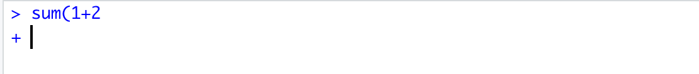

Chapter 3 Introduction to DADA2 and R
3.1 DADA2
DADA2 is an open-source software package for modeling and correcting Illumina-sequenced amplicon errors.
It has several advantages over other amplicon pipelines:
- Resolution: DADA2 infers amplicon sequence variants (ASVs) from amplicon data rather than operational taxonomic units (OTUs) clustering based methods (we will discuss what these are and how they differ below).
- Accuracy: DADA2 reports fewer false positive sequence variants than other methods. It incorporates quality information quantitative abundances, sequence differences and parameterises its error model using the data provided.
- Comparability: The ASVs output by DADA2 can be directly compared between studies, without the need to reprocess the pooled data.
- Computational Scaling: The compute time and memory requirements are lower than some other methods.
3.1.1 OTUs vs ASVs
OTUs (Operational Taxonomic Units) are generated by clustering reads into groups based on similarity. A threshold, such as 97% similarity, is used to cluster sequences together often with the hope that all those sequences will belong to the same taxonomic group. Because of this clustering step different datasets cannot be compared.
Commonly used software that are used for clustering OTUs include:
- UCLUST
- VSEARCH
- CD-Hit
- SWARM
ASVs (amplicon sequence variants) are generated using the following methods. First the number of times an exact sequence has been sequenced is calculated. This is then combined with an error model unique for the sequencing run to determine the probability that a particular read is not found in the dataset due to a sequencing error. Reads can then be filtered out according to this calculation with the aim to remove sequencing errors and leave only true sequences.
ASVs are able to be compared across studies using the same amplicon sequence as exact sequences are used rather than the clusters generated by OTU analysis.

3.1.2 Workflow
The workflow we will be following is summarised below:
- Paired end data is loaded into the R environment
- Primers are removed using the software cutadapt
- The data is then quality examined by plotting the error quality profiles using DADA2
- Filter and trim the files to remove poor quality sequences
- Generate an error model, dereplicate reads and infer ASVs from the clean data
- Merge the paired end reads
- Make an ASV matrix
- Remove potential chimeric reads from the dataset
- Assign taxonomy
- Multivariate analysis
3.2 R

R is an open-source free language and environment which was designed for statistical computing and graphics. It is possible to install R on many UNIX platforms, Windows and MacOS. In addition to its base environment, that contains capabilities for data manipulation, calculation and graphical display, there are many packages (including DADA2) that can be installed and contain additional functions, data and code for analysing, manipulating and plotting different types of data.
You do not need to understand all the code you will be running today but a basic foundation in R can be useful when you come to analysing your own data and running further analysis. Here are some useful links to get you started if you want to learn more about R after this course.
Tutorial:
R Website:
Cran Website:
Rstudio Website:
If you are not familiar with R we have decribed some of the common terminology and put a few hints to help you understand how to run a few basic R commands below. Feel free to skip this section and move onto the next chapter if you have used R before and are comfortable with the basics.
3.2.1 The console window
The console window is the place where the user can type R commands to submit and then view the results, just like the terminal window in linux.
R shows it is ready to accept commands by showing a > prompt. You can then submit a command using the enter button. If you haven’t completed a command (for example you forget to close a set of parentheses) the + symbol will show on a new line until you finish the command.

3.2.2 Your working directory
Your working directory is the folder you are currently working on on your computer. If you set this when you read in or write an output to a file R will automatically look for and save files in this directory.
You can set your working directory using:
setwd("/path/to/working_directory/")3.2.3 Packages
Packages contain additional functions, data and code for analysing, manipulating and plotting different types of data. Many common packages will be installed as default when you install R. Other more specialised packages, such as the DADA2 package, must be installed by the user.
Packages found on The Comprehensive R Archive Network (CRAN) which is R’s central software repository can be installed easily using the following command.
install.packages("package_name")Every time you reload R you will need to load the packages you need if they are not one of the ones installed by default. To do this type:
library("package_name")3.2.4 Functions
Functions are a set of commands that are organised to perform a specific task. There are a lot of functions that come pre-installed in packages in R and others can be installed as parts of packages. It is also possible for users to create their own functions.
For example a specific function can be called like this, we will use the sum function:
sum(1,2) # which sums 1+2 and prints 3 to the console window.And to write your own function you would type something like this:
function_name <- function(arg_1, arg_2, ...) {
Function body
}3.2.5 Assigning values to variables
A variable provides a means of accessing the data stored in Rs memory. Data can be assigned to a variable using either <- or =. For example:
x<-sum(1,2)If you run this command and then type x into the R console 3 will be printed to the screen. You can then use this variable in another function and assign to another variable if desired:
y<-sum(x,x)
y # y would be assigned the value 6 and be printed to the console When you have a large script containing many commands it is beneficial to give variables logical names which can help you remember what they contain and help you call them quickly when needed.
3.2.6 A few useful commands and tips
rm(list=ls())can be used to clear your environment when you start a new analysis. This will delete all the variables you have stored in Rs memory so be careful when you use this.- The
read.table()can be used to read in a file. R likes to work with simple formats such as.csvand.txtfiles. write.table()can be used to write a data frame or a matrix to a file.- Just like linux, remember you can press the up arrow on your keyboard to list previous commands run in the current R session.
- To get the more information and help on the function you want to use you can call using
?_function.name_e.g.:
?sum